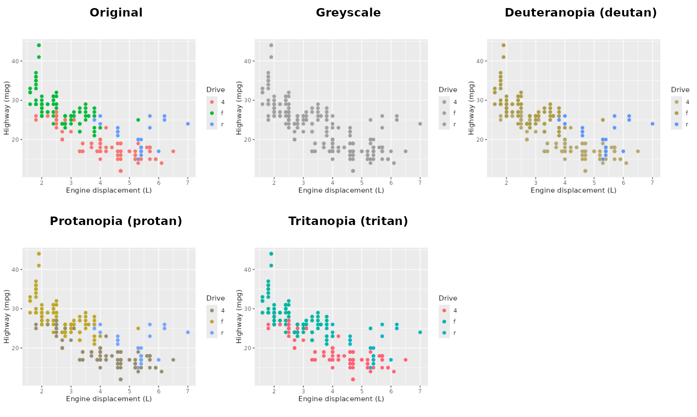
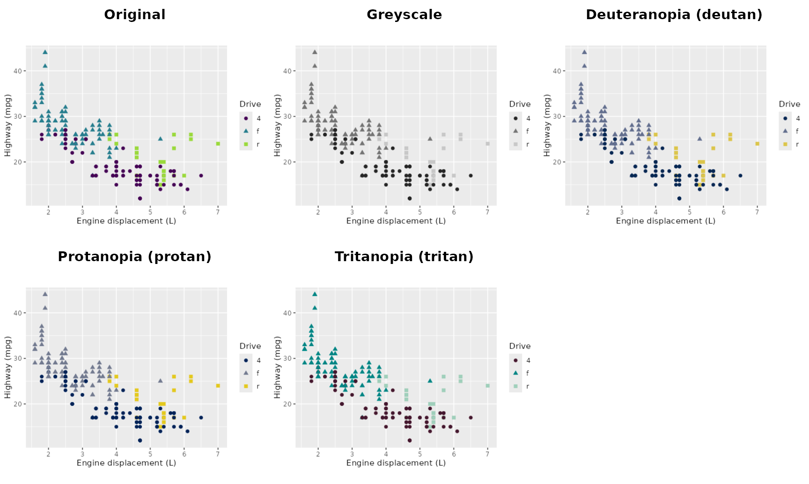

Checking colours for greyscale and colour vision deficiency
Source:vignettes/colour-checks.Rmd
colour-checks.RmdA figure often reaches readers who do not see its colours as intended:
- around 8% of men and 0.5% of women of Northern European ancestry have a colour vision deficiency, most often a reduced sensitivity to green (deutan) or red (protan) light;
- printed and photocopied copies are frequently greyscale.
ggsaveR can show and save versions of a plot that simulate both, so you can check that groups remain distinguishable.
library(ggplot2)
library(ggsaveR)
#>
#> Attaching package: 'ggsaveR'
#> The following object is masked from 'package:ggplot2':
#>
#> ggsave
p <- ggplot(mpg, aes(displ, hwy, colour = drv)) +
geom_point(size = 2) +
labs(x = "Engine displacement (L)", y = "Highway (mpg)", colour = "Drive")Previewing a plot
preview_variants() draws the plot next to its variants.
Render it at the size of the final figure, so that text and point sizes
are realistic.
preview_variants(p, width = 5, height = 3.5)
ggplot2’s default palette varies hue at constant lightness. Such colours are easy to tell apart on screen, but turn into the same grey when printed in greyscale, and the red and green hues are hard to separate with a red or green deficiency.
Improving the plot
A palette that also varies in lightness, such as viridis, survives greyscale printing. Encoding the groups with shape as well as colour helps every reader:
p2 <- p +
aes(shape = drv) +
scale_colour_viridis_d(end = 0.85) +
labs(shape = "Drive")
preview_variants(p2, width = 5, height = 3.5)
Saving variants with every figure
To save the variants next to every figure a script writes, set the
variants option. Each variant is written as a PNG named
after the first format, at the same size and resolution:
old <- ggsaveR_options(
formats = c("pdf", "png"),
variants = c("greyscale", "deutan")
)
print(ggsave("economy.png", p2, width = 5, height = 3.5))
#> [1] "economy.pdf" "economy.png" "economy_greyscale.png"
#> [4] "economy_deutan.png"
options(old)Variants follow the dir and
overwrite_action options and are listed in the log. They
are meant for checking, not for publication.
How the variants are made
- Greyscale keeps the relative luminance of each colour, computed in linear RGB, which is how lightness differences come out in a greyscale print.
- Deutan, protan and tritan use the model of Machado, Oliveira and Fernandes (2009), as implemented in the colorspace package. They show complete dichromacy. Milder forms are more common, so a figure that works here works for most readers.
The simulations need the colorspace package; greyscale does not.
References
Machado GM, Oliveira MM, Fernandes LAF (2009). A physiologically-based model for simulation of color vision deficiency. IEEE Transactions on Visualization and Computer Graphics, 15(6), 1291-1298. https://doi.org/10.1109/TVCG.2009.113